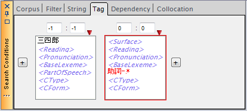
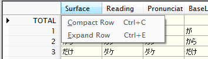
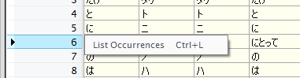

ChaKi.NETの持つ検索機能には、ここまで説明したKWICの形で結果を得るものだけでなく、 条件にマッチする語のリストの形で結果を得る機能もあります。 これをWordListと呼びます。
WordList検索条件の作成
WordListの検索条件は、TagSearch, DependencySearchとまったく同じです。 従って、条件の作成方法もそれらと同じようにSearchConditionパネルの対応する タブの中で行います。
- SentenceSearchは語を意識しない検索ですので、その検索条件を WordListの検索条件として使うことはできません。
WordListの実行
KWIC検索と異なり、Commandパネルの"WordList"ボタンを使用します。
- WordListでは絞り込み検索はできません。（常に新規検索となります。）
例として、コーパス中で、「三四郎」の直後に現れる助詞をリストすることを考えます。
Tag条件タブを使用し、次のような検索条件を作成します。

中心語を助詞の方に設定していることに注意してください。WordListでリストされるのは
中心語のみですので、この例で1語に絞られる「三四郎」の方を中心語にする意味はありません。
※ なお、現在(2009/09/24)共起語をすべてリストする仕様に移行中です。
この条件でWordListを実行すると、ビューがKWICからWordListに切り替わり、この条件に マッチするLexemeが異なりごとに集計され表の形で出力されます。
{kind=link}
各行に表示されているのがLexemeで、"Surface"～"CForm"までのカラムにはLexemeの属性が 表示されています。これによりLexemeを一意に識別することができます。
次のカラム"sanshiro"は、コーパスを表しており、"sanshiro"コーパスにおける各Lexemeの 出現数が示されています。この例ではコーパスを1つだけしか選択しませんでしたが、 複数のコーパスを検索対象とした場合はここに複数のカラムが並び、各コーパスにおける 出現数が横並びで表示されます。
"All", "Ratio"カラムは、対象としたコーパス全体での出現数とその割合（「このLexemeの出現数」／ 「マッチした全てのLexemeの出現数」）を表しており、例では"sanshiro"カラムの値と"All"の値は 完全に同じになります。
リスト内で任意のLexeme属性を同一視する
"Surface"～"CForm"の各Lexeme属性カラムのヘッダでマウスを右クリックすると、次のようなポップアップメニューが 表示されます。

- "Compact Row"を選択すると、その属性を同一視してリストを作りなおします。 ここで「同一視する」とは、Lexemeの同一・異なり判定を行う際に、その属性を除外して考えることを意味します。 同一視された属性には、実際の値の代わりに"*"が表示されます。
- "Expand Row"を選択すると、同一視していた属性を元に戻します。
例えば、PartOfSpeech以外の属性をすべて同一視すると、品詞による異なりでグループを作成し、グループごとの 出現数をリストすることができます。上の例でこれを行った結果を次に示します。
{kind=link}
リストされたLexemeの出現箇所を調べる
WordListの出力結果を見て、あるLexemeがどのような形で出現したかを知りたい場合があるかもしれません。 そのような場合のために、WordListビューからKWIC検索を行う方法が提供されています。 WordListビューの行ヘッダでマウスを右クリックすると、ポップアップメニューが表示されますので、 "List Occurrences"を選択します（下図）。

その結果、元のWordList条件に対してここで選択したLexemeの属性を補足した条件が 自動的に作成され、KWIC検索結果に切り替わります。
{kind=link}
- 同一視されている属性は、自動生成される条件においても除外されます。
サイズの大きなデータに対するWordList結果取得速度の改善方法
サイズの大きなデータに対してWordListを行った場合などでヒット数が多いと、徐々に TOTALの再計算・再描画処理が重くなるため、結果を得るのに極端に時間がかかる状況になることがあります。
これを避けるには、WordList検索前にツールバーの をクリックし、 再計算・再描画を抑制します。結果がすべて取得された後に再度クリックすることにより そこで一回だけ再計算・再描画が行われ、最終調整された結果が表示されます。
なお、このボタンは、WordList以外の検索時にはOFFにして下さい。(KWIC Viewは 再計算・再描画を最適化する処理を持っています。このため、抑制を解除したときに余計な 時間がかかってしまいます。）